6 m · From your computer
Start with what your computer recorded.
Pair over Bluetooth or plug in over USB, download, review what came in, done. After the first time, only new dives come across.
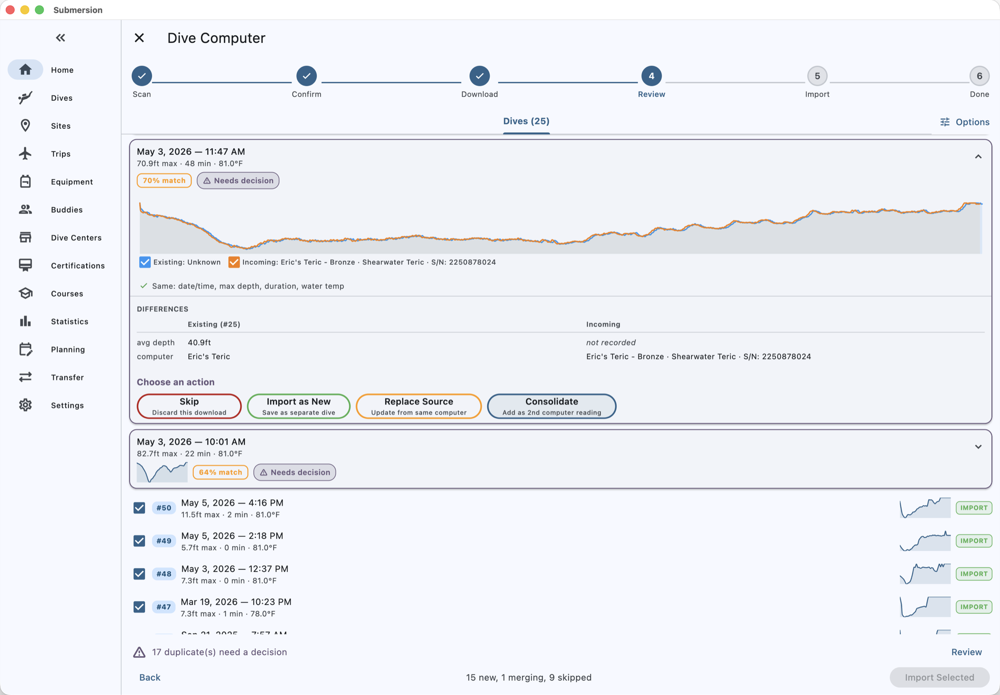
350+ models
Submersion bundles libdivecomputer. That gives it the 350+ models supported by libdivecomputer, from 37 manufacturers, over Bluetooth LE and USB. The project has confirmed the Shearwater Teric and the Aqualung i300C and i330R and is looking for testers for the rest. Bluetooth only on iOS.
Incremental downloads
Submersion remembers the last dive it took from each computer and fetches only what is new.
Duplicate review
A download that looks like a dive you already have is shown next to it. Skip it, import it as a new dive, replace the earlier source, or keep both computers' readings on one dive.
Two computers, one dive
Wear a backup? Both downloads attach to the same dive, and you can put their profiles on one chart.
Already have a logbook somewhere else?
Import files
Subsurface, MacDive, Shearwater Cloud, Garmin FIT, DAN DL7, Ratio and UDDF files import directly. CSV comes with presets for MySSI, Diving Log, DiveMate, Garmin Connect and Shearwater Cloud, or map the columns yourself.
Apple Health
Underwater workouts recorded by an Apple Watch import on iOS with depth, temperature and heart rate.
Paper logbooks
Scan the pages and Submersion reads the entries with OCR so you can check them and import them.
Open formats
Everything you import can leave again as UDDF 3.2, CSV, Excel or PDF.
12 m · The log
A record with room for everything.
Every field is optional. A quick reef dive needs a site, a depth and a time. A staged decompression dive can carry every gas switch, setpoint and signature.
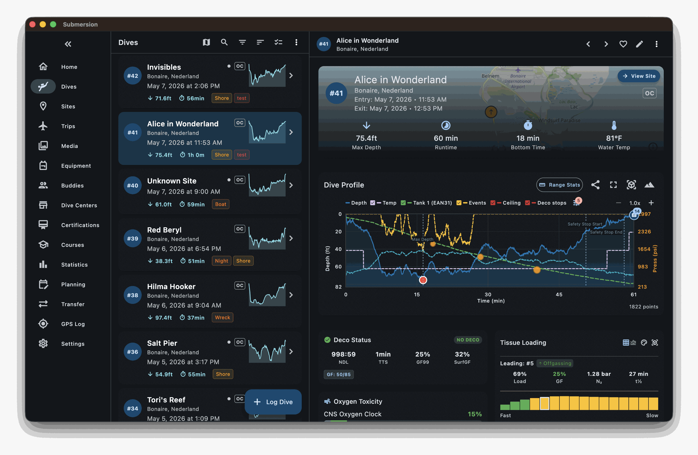
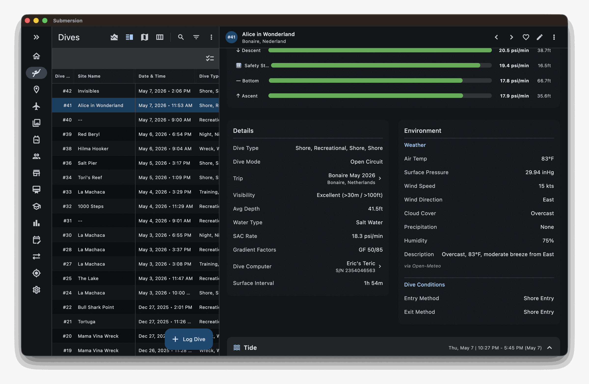
Conditions
Visibility, current, swell, water and air temperature, entry and exit method, altitude. Weather is fetched for the date and place. Tides come from a bundled global model and work offline.
People
Buddies, divemaster, your own role on the dive, dive center, operator and boat. A buddy or instructor can sign the dive on your screen.
Gases and cylinders
Any number of cylinders per dive, each with its oxygen and helium fraction, start and end pressure, and the pressure trace from an air-integrated transmitter. Gas switches are marked on the profile.
Weights
What you carried, where you put it, and whether it felt right. The weight planner learns from this.
Your own fields
Tags with colors, star ratings, favorites, dive types you define, and custom fields for whatever your agency or your habits call for.
Views
Cards, or a table with the columns you choose, sortable and saved. Bulk edit fixes a whole trip's entries at once.
Safety review
After each dive Submersion checks the profile for fast ascents, sawtooth patterns and missed safety stops, and lists what it found.
Several divers
Separate profiles for each diver who uses the app, each with emergency contacts, medical notes and insurance details.
18 m · Where you dove
Sites, trips, and the map between them.
Submersion ships with 3,600 dive sites and 3,600 dive centers from OpenStreetMap, so most places you dive are already on the map. Add your own with a tap.
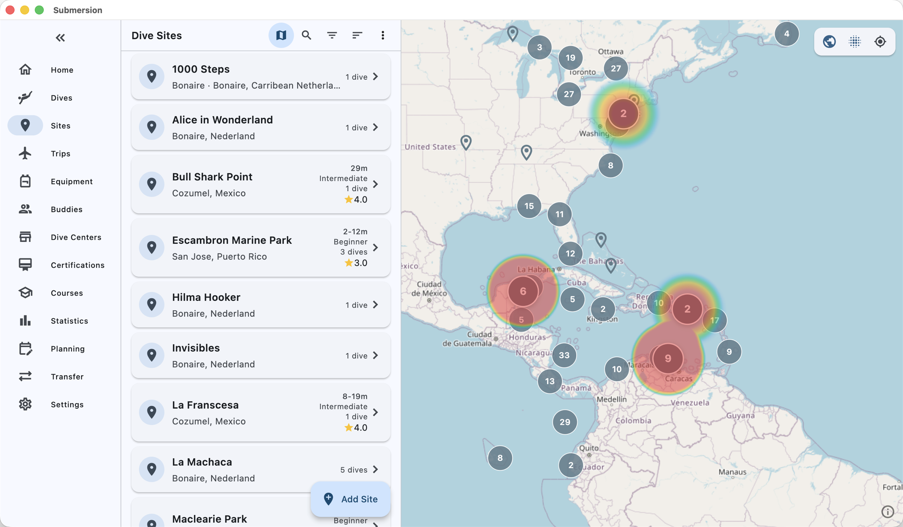
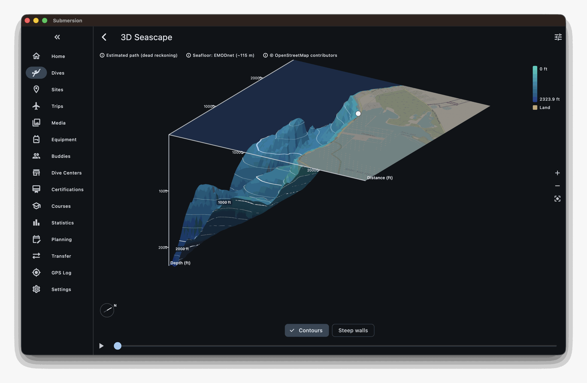
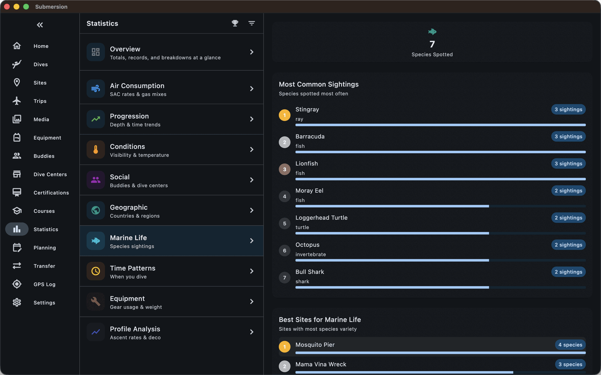
Site records
GPS with reverse geocoding, depth range, difficulty, water type, hazards, access notes, mooring and parking. Dives logged at the same spot are matched to one site, and duplicates can be merged.
Maps
Marker clustering, a heat map of where you dive most, and downloadable regions so the map works on the boat without a signal.
Underwater terrain
Bathymetry overlays on the map, and a 3D terrain view of a site with the features you place on it.
Reef data
Protection status, habitat, bleaching alerts and reef health for the sites you visit.
Marine life
511 species built in. Record sightings per dive, see what lives at each site, and tag species in photos.
Trips
Dates, resort or liveaboard, an itinerary by day, preparation checklists, and a gallery for the whole trip.
24 m · Photos, gear and paperwork
The rest of what a dive leaves behind.
Photos and video, the gear you wore, and the cards that say you are allowed to.
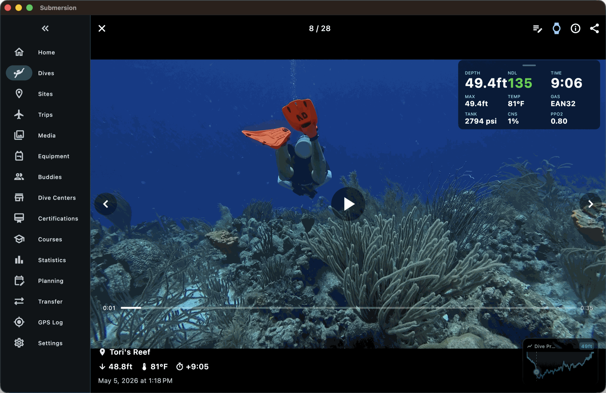
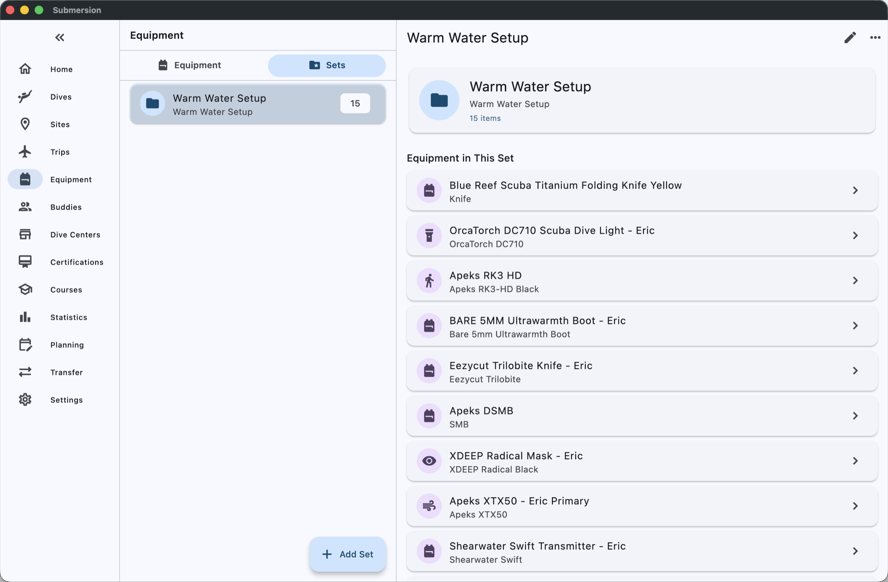
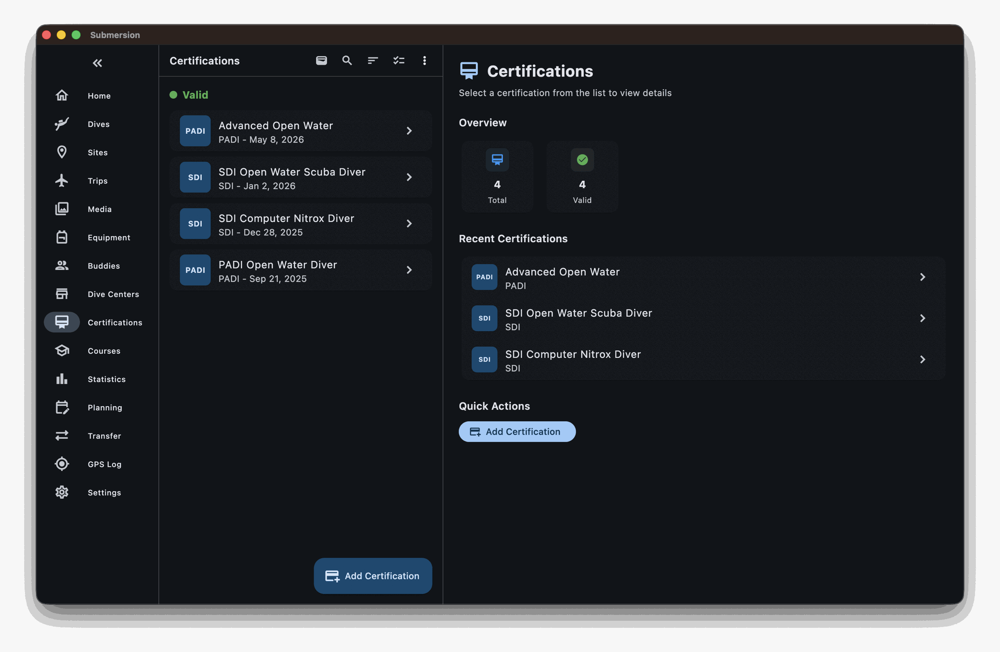
Photos and video
Import from the device gallery, watched folders, a network share, or your own iCloud, Google Drive, Dropbox or S3 bucket. Each shot is matched to a dive by capture time and shown as a marker at its depth on the profile.
Equipment
Every item with brand, model, serial, purchase date and cost. Service schedules with reminders, and a service log of what was done and what it cost.
Equipment sets
Warm water, cold water, sidemount: build sets and apply one to a dive. A set can select itself by location.
Certifications
A wallet of your cards with photos of front and back, agency, level, number and expiry.
Courses
Track a course's requirements and link each one to the dive that satisfied it.
Pre-dive checklists
Run a checklist from a template before the dive and attach the session to the log.
32 m · Reading the profile
Every sample, and what it means.
Your computer recorded a depth every few seconds. Submersion turns that into decompression state, gas exposure and ascent behaviour, computed from the profile, that you can scrub through second by second.
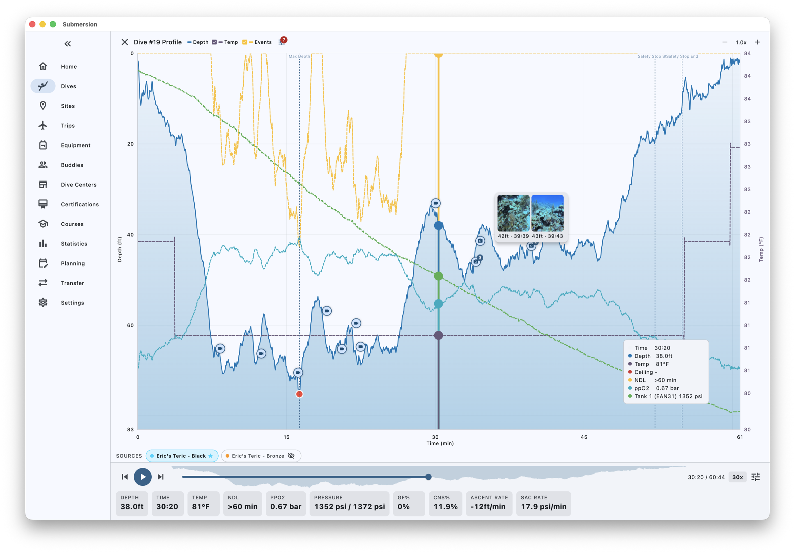
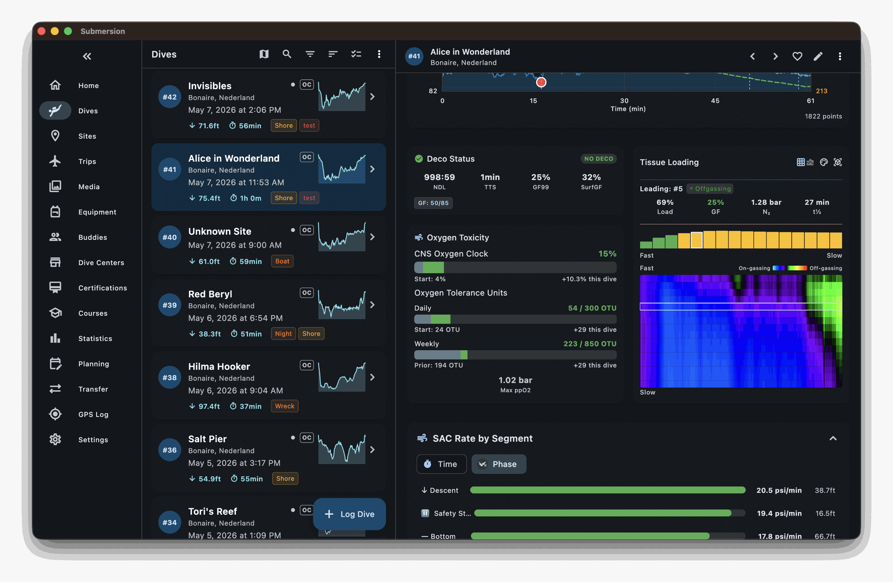
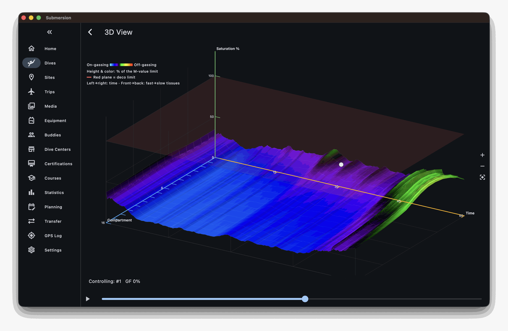
Playback
Play or scrub the profile. Overlay temperature, tank pressure, heart rate, SAC, ppO₂, ppN₂ and ppHe, gas density, gradient factor, surface GF, TTS, ceiling, NDL and deco stops, and choose which of them you want to see.
Bühlmann ZH-L16C
Tissue loading for all 16 compartments, nitrogen and helium, computed from the profile with the gradient factors you set. Watch the leading compartment change as the dive goes on.
Oxygen exposure
CNS and OTU for the dive, plus running totals for the day and the week, using the calculation method you prefer.
Computer versus model
Show the NDL, ceiling and TTS your computer reported next to what the model says, and switch between them.
Two computers
Overlay the profiles from two computers on one chart and see where they disagree.
Edit
Trim a profile that started on the boat, with undo if you get it wrong.
3D
Move through the dive in three dimensions, or view the 16 tissue compartments as a surface that rises and falls with the dive.
Ascent rate
Ascent speed is drawn on the profile and colored where it exceeds the limits.
40 m · Planning
Plan with the gas, gear and tissues you'll actually have.
The same decompression model as the analysis, run forward. Recreational divers get an NDL solver. Technical divers get segments, setpoints and bailout.
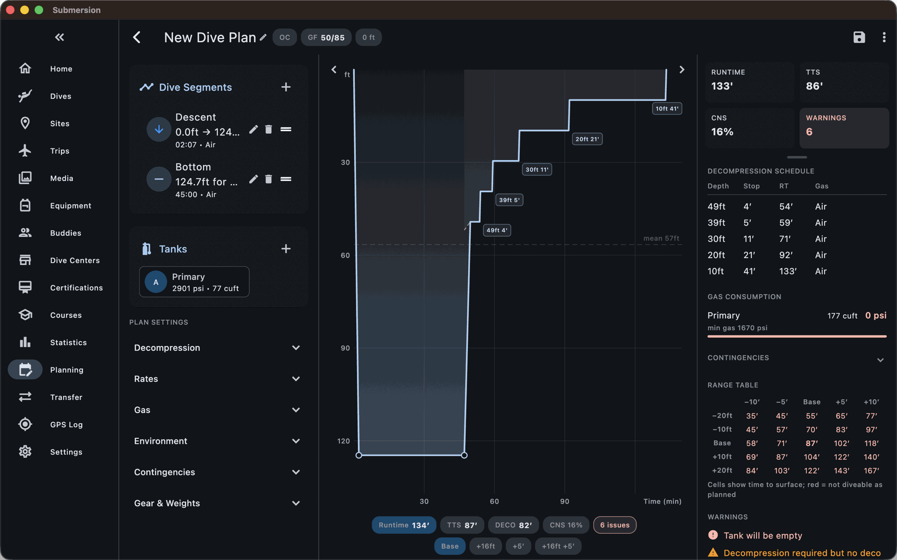
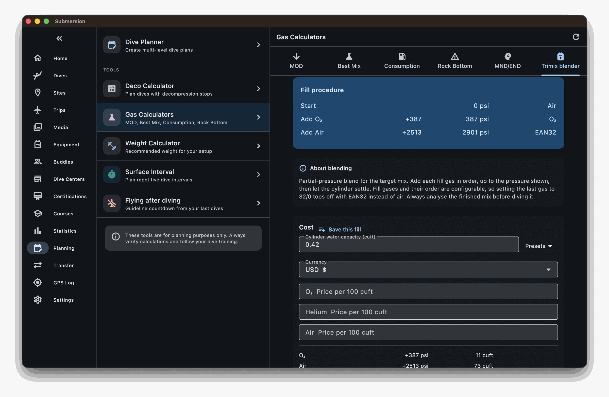
The planner
Build the dive as segments, or drag the profile into shape. Cylinders, gases and switches come from your own tank presets and cylinder configurations.
Open circuit and rebreathers
OC, CCR, SCR and PSCR, with setpoints by depth, and the mode switchable partway through the plan for a bailout.
Bailout check
For a CCR plan, Submersion works out open-circuit demand along the whole profile and checks your bailout cylinders against the worst moment, with real-gas correction.
Contingencies
Contingency scenarios next to the main plan, and a range table of depth against time.
Repetitive dives
Seed the plan with the tissues from the dive you just logged, or use the surface interval tool to see how long to wait.
Weighting
The weight planner builds a buoyancy model from your logged dives and predicts what to carry for a new suit, cylinder or water type.
Gas calculators
MOD, best mix, maximum narcotic depth, consumption and rock bottom. The blender works out partial-pressure fills with a real-gas equation and prints the invoice.
On the slate
Export the plan as a PDF for your wet notes.
50 m · Your data
On your devices, encrypted, in formats you can leave with.
Submersion has no server and no accounts. Your logbook is a database on your own hardware. Sync and backup go through cloud storage you already own.
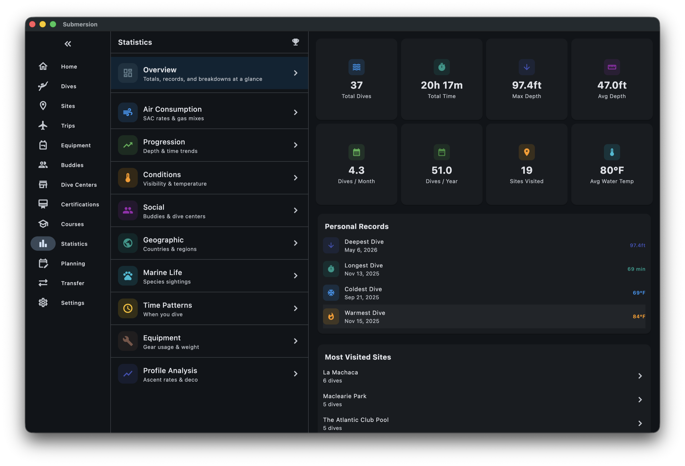
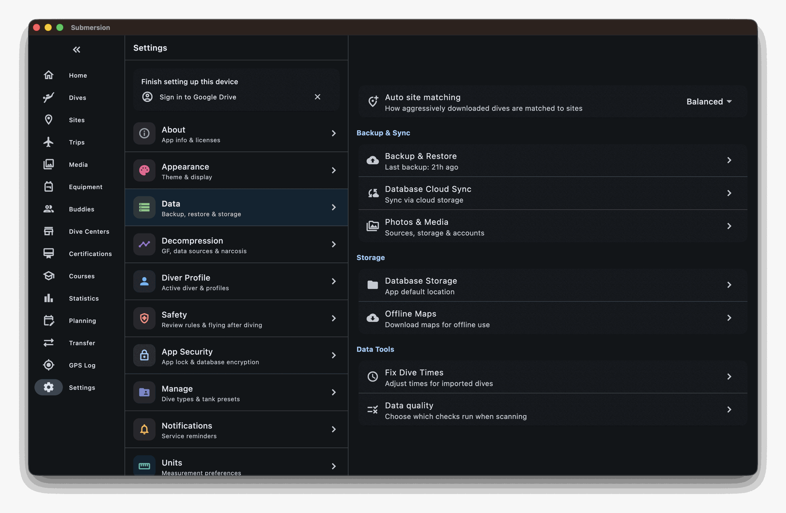
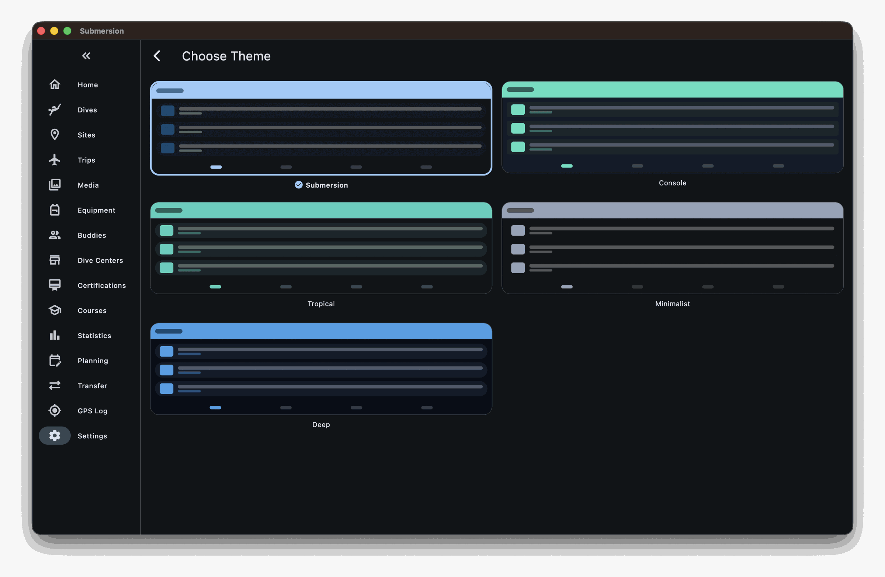
Local and encrypted
An SQLite database encrypted at rest, with Face ID, Touch ID or a passphrase to open the app.
Sync
End-to-end encrypted sync between your devices through your own iCloud, Google Drive, Dropbox or S3-compatible storage. A recovery code unlocks it on a new device.
Backups
Encrypted backups to the same places, an automatic backup before every upgrade, and restore from any of them.
Export
UDDF 3.2, CSV, Excel, KML and GPX, and printable PDF logbooks in Simple, Detailed, Professional, PADI and NAUI layouts.
Data quality
An assistant that finds duplicates and anomalies across the log and walks you through fixing them.
Your units, your language
Independent units for depth, temperature, pressure, volume, weight, altitude and SAC. 11 languages. Five themes in light and dark. Keyboard shortcuts on the desktop.
Statistics
Ten pages: totals and records, progression, conditions, gas, marine life, geography, social, time patterns, equipment and profile analysis.
Open source
GPL-3.0, with the whole source on GitHub. No ads, no subscription, no in-app purchases.
60 m · Download
Get Submersion.
Free on every platform. Desktop and Android builds are on GitHub Releases. iOS is on the App Store.
DownloadAll platforms
Found a bug, or want something added? Open an issue on GitHub. For anything else, support@submersion.app.